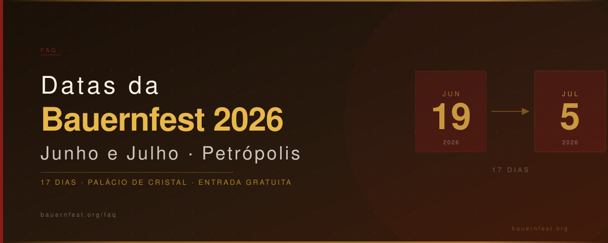

Quais são as datas da Bauernfest?
Quais são as datas da Bauernfest? A festa acontece todo ano no mês de junho, com término nos primeiros dias de julho. Em 2026, as datas confirmadas são 19 de junho a 5 de julho — 17 dias de programação no Palácio de Cristal em Petrópolis, RJ. A Bauernfest existe desde 1989 e mantém esse calendário de verão europeu / inverno brasileiro com notável regularidade.
Datas 2026: 19 de junho a 5 de julho · Palácio de Cristal, Petrópolis, RJ
Por que a Bauernfest é sempre em junho?
A escolha de junho tem raízes tanto culturais quanto climáticas. Na tradição alemã, junho é o mês das festas folclóricas de verão (Johannisfest), que celebram a chegada da estação mais quente no hemisfério norte. Para Petrópolis, o mês coincide com o início do inverno — período de temperaturas amenas que remete ao clima europeu e cria uma atmosfera ideal para um festival ao ar livre.
Histórico recente de datas
Ao longo de mais de três décadas, as datas da Bauernfest seguiram sempre o mesmo padrão — terceira semana de junho até a primeira semana de julho. A regularidade reflete a maturidade do evento e facilita o planejamento dos visitantes que vêm de fora de Petrópolis especialmente para a festa.
Como se programar para 2026
- Salve as datas: 19 de junho a 5 de julho de 2026
- Reserve hospedagem com antecedência — Petrópolis lotou nos fins de semana de edições anteriores
- Consulte a programação oficial para escolher o melhor dia conforme suas atrações favoritas
- Planeje sua viagem pelo guia de turismo em Petrópolis
Há risco de cancelamento?
A Bauernfest tem um histórico sólido de realizações. Com exceção de episódios atípicos como a pandemia de 2020-2021, o evento acontece ininterruptamente desde sua criação. A edição 2026 está confirmada, com todas as estruturas sendo preparadas para receber o público no Palácio de Cristal.
← Voltar para o FAQ